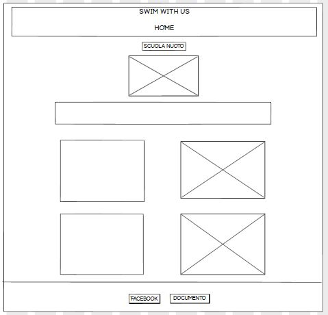

STRUTTURA E LAYOUT
1.STRUTTURA DEL SITO

2.WIREFRAME
3.LOOK AND FEEL
LINGUAGGI E STRUMENTI
- Linguaggi web utilizzati: html e css
- Supporto: sublimetext per il wireframe e github per la pubblicazione
- Social Network: pagina facebook
Essendo istruttrice di nuoto ed ex agonista ho notato che molto spesso mamme e papà non conosco veramente come funziona la didattica della società in cui è presente la scuola nuoto e di conseguenza non sanno quale potrebbe essere il percorso più adatto al figlio. Sarebbe importante quindi che il genitore del bambino conosca su grandi linee il suo funzionamento. Questo non riguarda solo il bambino, ma anche l’adulto che vuole affacciarsi a questo sport per la prima volta oppure vuole migliorare la sua tecnica. In ultimo verrà presentato il possibile passaggio dai corsi all’agonismo, mostrando i diversi livelli.
L’obiettivo principale del sito web è quello di essere un sito divulgativo con semplici, ma utili informazioni sul nuoto. I temi principali che affronta sono i benefici di questo sport ma in particolare quella che è la sua didattica all’interno della scuola nuoto per adulti e bambini ma anche per chi vuole intraprendere il nuoto a livello agonistico.
Navigando per il web ho notato che esistono diversi siti sul nuoto, ma sono tutti molto specifici, cioè mirano al nuoto come attività agonistica e informazioni su gare, trofei, nuotatori importanti, presentazione tecnica degli stili, news,ecc. Ho preso in esame, secondo i parametri della Likert Scala, due siti in particolare:
Likert scala: 1-5
COMPETITORS N°1: NUOTO UNO STILE DI VITA
TEMA:
Il tema del nuoto è molto approfondito e specifico, partendo dalla sua storia fino ad arrivare alle notizie più recenti, include anche diverse biografie. Spiega dettagliatamente la storia e la tecnica dei diversi stili ma non c’è una sezione dedicata alle fasi di apprendimento, presupponendo quindi un livello tecnico piuttosto elevato. Si concentra molto sul nuoto come competizione/gare eliminando l’aspetto amatoriale come semplice attività motoria. Nella sezione “chi siamo” è ben spiegata la mission del sito, i vari sponsor che ha ed anche i diversi network in cui sono. LIKERT SCALA: 4
SERVIZI:
Offre servizi in ambito della salute, come il calcolatore IMC|BMI|fabbisogno basale e calcolatore consumo energetico nuoto, questo servizio è gratuito e viene anche spiegata la formula scientifica che serve per calcolare i dati, viene usato principalmente da persone che conosco già che cos’è e a che cosa serve. Offre anche dei Podcast, anche di nuotatori importanti e dei quiz per testare le proprie conoscenze. Ha anche una sezione “SHOP” che porta al sito DOLCESTILNOVO Questi servizi sono tutti molto specifici, indirizzati a qualcuno che conosce ed è appassionato a questo mondo da molto vicino. LIKERT SCALA: 5
USABILITA'
Essendo molto approfondito, hanno inserito anche una mappa del sito per orientarsi più facilmente, siccome si può fare un po di confusione nel cercare delle specifiche informazioni, è comunque piuttosto intuitivo ed è sempre visibile la barra del menu
LIKERT SCALA: 4
COMPETITORS N°2: SWIM4LIFEMAGAZINE
Questo sito è invece un magazine, quindi si impegna a:
E' presente una sezione dedicata alla salute e all’alimentazione, affronta solo brevemente la fase di ambientamento per i bambini senza approfondire i diversi livelli di apprendimento. L’usabilità del sito è abbastanza intuitiva anche se abbastanza ricca ed approfondita. LIKER: 4
I siti che ho analizzato nel benchmarking sono indirizzati principalmente ad un target piuttosto esperto, che sa già orientarsi e capire in cosa consiste essere appassionati a questo sport, quindi informarsi sulle ultime news dei nuotatori o degli impianti, affinare la tecnica della nuotata e misurare parametri scientifici particolari, informarsi sull’alimentazione, ma anche su diversi articoli che riguardano altri settori del nuoto come i master e il paralimpico. Questo tipo di comunicazione è molto efficace quindi verso un target specifico, mirato e consapevole, mentre tende ad escludere quella fascia di target che non è intenditore e che vuole approcciarsi e capire in maniera semplice e generale le basi del nuoto ed inserirsi in esso.
Lo stile comunicativo è semplice e lineare, adatto ad un target che varia dai ragazzi agli adulti e non usa termini scientifici o particolarmente tecnici. L’obiettivo è quindi quello di creare un sito che possa dare una serie di informazioni standard ed attendibili che chiunque possa comprendere. Qualcosa che possa arricchire, in particolare, la consapevolezza dei genitori nel sapere cosa e come il proprio figlio affronterà l’inserimento al “mondo acqua”.
Ogni paragrafo è associato ad un’immagine che racchiude il significato di esso. Troveranno utile questo sito adulti interessati a svolgere nuoto a livello amatoriale come attività motoria, e per chi vuole sapere come sono strutturati i livelli e le capacità che verranno apprese nei corsi di nuoto ed oltre, ma anche capire la figura dell’istruttore in relazione sia ai bimbi che agli adulti.
l'obiettivo è quello di portare un cambiamento nell'approccio alla scuola nuoto da parte delle persone, generando maggiore conoscenza e consapevolezza attraverso informazioni attendibili
I diversi target possono essere raggiunti in particolare attraverso i social media, ad esempio ho creato la pagina facebook, con cui è possibile includere età dai ragazzi agli adulti coprendo l’intera fascia interessata.
L'obiettivo di diffondere tali conoscenze è stato raggiunto e possiamo vederlo grazie ai like raggiunti al post della pagina facebook “Swim with us” in cui vengono pubblicati post inerenti ai diversi temi trattati nel sito e si presente brevemente il sito.